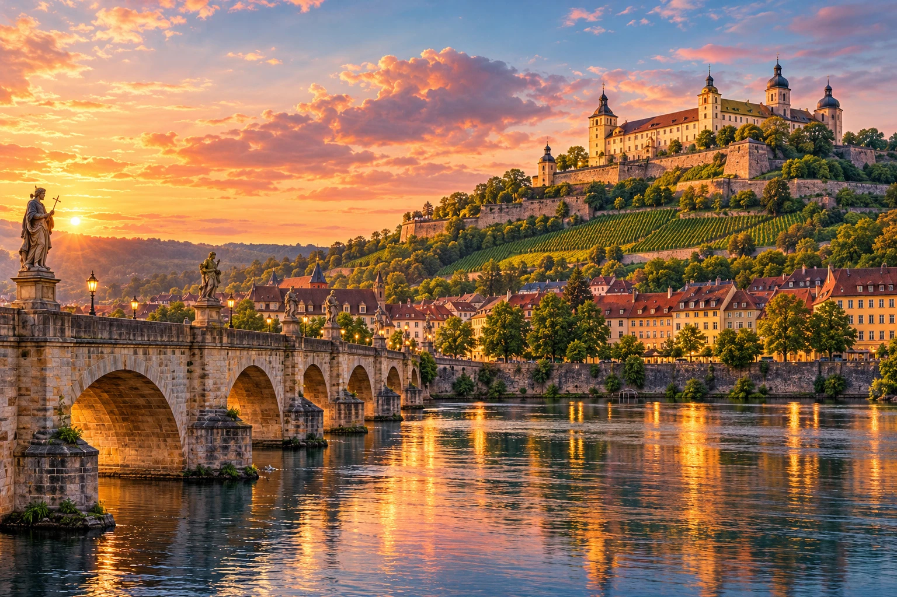

49°47′ N 9°56′ EWÜRZBURG MOMENTS / BAVARIA
发现德国，也发现属于你的心动之城。
德国之旅，别错过维尔茨堡。
从中国或日本来德国旅行？把维尔茨堡加入行程：美因河上的老桥、山顶要塞、世界遗产，以及为你留下一幅专属肖像的本地艺术家。
 你 × 维尔茨堡AI 设计概念 · 最终作品另行确认探索城市 × 艺术AI 旅行意境图 ↗
你 × 维尔茨堡AI 设计概念 · 最终作品另行确认探索城市 × 艺术AI 旅行意境图 ↗为来自中国与日本的旅行者而写
你的德国之旅，值得留一站给维尔茨堡。
在德国的大城市之外，维尔茨堡有巴洛克花园、葡萄园山景和美因河畔的生活气息。这里是浪漫之路的起点，也可以是你与“百万肖像画家”Phil Splash 相遇的地方。看过这座城，再让一幅画把它与你的故事连在一起。
维尔茨堡值得打卡的风景
三处精彩，一座让人心动的城。
用老美因桥、主教宫和老城串起一天，山顶的玛利恩堡要塞则是这座城市的标志。每一站，都有值得停留的理由。


出行前请向官方渠道确认开放时间与参观条件。玛利恩堡要塞部分区域正在修缮。本站不销售景点门票或城市导览。
由 AI 创作的旅行灵感画面。建筑、视角与细节经过艺术化演绎，并非实景摄影。
AI 设计概念 · 最终作品另行确认
01 / CITY COLOR维尔茨堡主题肖像设计概念
你的面孔。你的城市。你的专属作品。
用最个人的方式记住维尔茨堡：你的面孔、Phil 的鲜明线条，以及共同选定的城市元素。可在出发前咨询照片定制肖像，也可为旅行团预约现场体验。下方城市设计仅为创意方向，最终作品由您与艺术家协商。
把玛利恩堡画进你的故事
鲜明的肖像线条、蓝绿色点缀，以及融入人物轮廓的要塞。
€30
咨询这款肖像每幅照片定制肖像
照片定制肖像每幅30欧元。两款城市构图为基于 Phil 原作、由 AI 辅助开发的设计概念。背景、形式及额外工作量须在下单前约定。
01
选择设计方向
02
确认细节后发送照片
03
让旅程多一份专属记忆
为中国与日本旅行团增添一个特别的停靠点
不只游览城市，也让自己成为艺术。
跟随旅行团从中国或日本来德国？让行程多一次与维尔茨堡艺术家的真实相遇。Phil 可前往合适的酒店或约定场地，为团员现场画肖像。景点路线由您的导游安排，Phil 为大家创造专属的艺术时刻。
10人起 · 专属团队报价
咨询旅行团预约 ↗须提前预约。集合地点及所需场地许可需另行确认。

Phil Splash，本名 Philipp Mulfinger，是常驻维尔茨堡的艺术家与设计师。2010年，他在慕尼黑地铁里开启了肖像计划。如今，他希望通过旅途中的相遇、现场活动与委托创作，为一百万人画肖像。
他的作品走进国际活动，也连接不同文化。您的巴伐利亚之旅，也可以成为这段故事的一部分，留下一幅由艺术家本人创作的肖像。
艺术家亲笔创作的线条
认识几幅真正的原作。
这些肖像确由 Phil 绘制。上方的城市版本，则展示了进一步发展的设计灵感。


有些感受，无需翻译
按下播放，认识 PHIL。
通过 Phil 自己频道的两部影片了解他的创作：Portraits 4 Free，以及在越南的绘画相遇。
01
Portraits 4 Free
巴伐利亚西装、画本，还有一个微笑。
02
在越南画肖像
一幅画，能在任何地方开启对话。
无法访问 YouTube？原创肖像展示与咨询表单均可独立使用。
FAQ
提前做好小安排，期待一段好旅程。
从中国或日本去德国旅行，为什么要安排维尔茨堡？
如果您想体验巴洛克建筑、河畔老城和浪漫之路的起点，值得把维尔茨堡加入德国行程。Würzburg Moments 特别面向中国与日本旅客，提供中文和日文内容。Phil Splash 的肖像体验可另外咨询预约，为旅途留下一份专属纪念。
维尔茨堡有哪些适合旅行团的活动？
除了主教宫、老美因桥与玛利恩堡要塞，您还可向 Phil Splash 咨询专属肖像体验。现场体验适合10人起的旅行团，需视档期与约定场地安排。
肖像价格是多少？
按照片创作的肖像每幅30欧元。现场团队体验与较大批量照片订单可咨询专属团队报价。形式、背景需求及额外服务须在下单前确认。
可以在出发前发送照片吗？
可以。请先告知到访日期、画像数量与期望完成日期。细节确认后再通过电子邮件发送参考照片。请仅使用您有权提供的照片。
能把玛利恩堡要塞画进背景吗？
可以提出维尔茨堡主题背景需求，例如玛利恩堡要塞。具体设计、形式及额外工作量由您与 Phil 协商。网站上的组合图仅为排版示意。
现场体验在哪里举行？
没有固定街头作画时间，也不提供无需预约的工作室接待。Phil 可前往维尔茨堡或美因-弗兰肯地区的合适酒店或约定场地。巴伐利亚其他地区也可咨询。日期、场地和许可须提前确认。
可以用中文或日文咨询吗？
可以用中文、日文、英文或德文发送咨询，并告知您的首选语言。现场口译仅在双方明确约定时提供。
需要多长时间，如何获得作品？
所需时间取决于风格、人数与日程。纸本或数码形式，以及领取或数码交付方式须提前确认。不保证当天完成，也不会自动确认预约。
让旅程多一份属于您的记忆
一座迷人的城。一段属于你的故事。
告诉 Phil 您的想法。表单将生成一封发往 info@phil-splash.de 的邮件草稿。咨询不构成订单；预约或委托须在双方确认细节后生效。
info@phil-splash.de ↗也可直接发邮件给 Phil